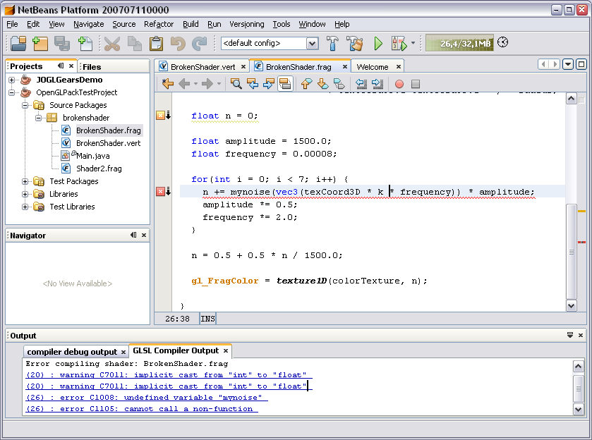
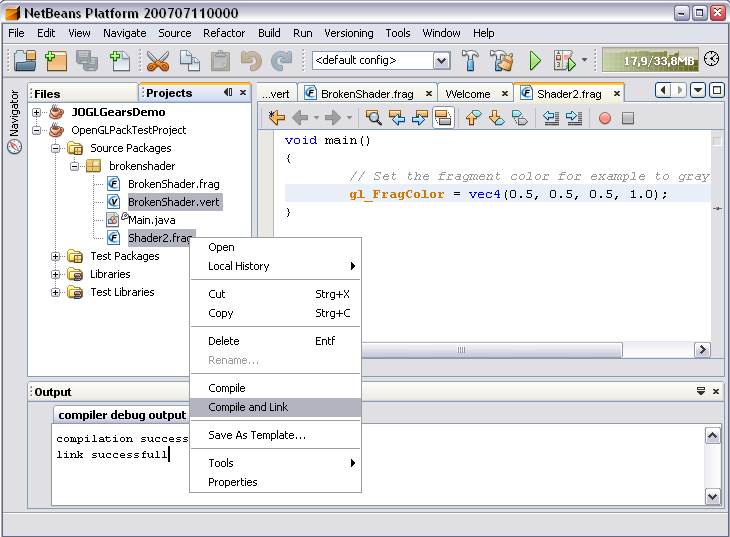
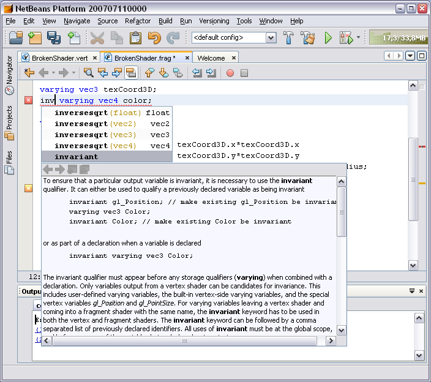
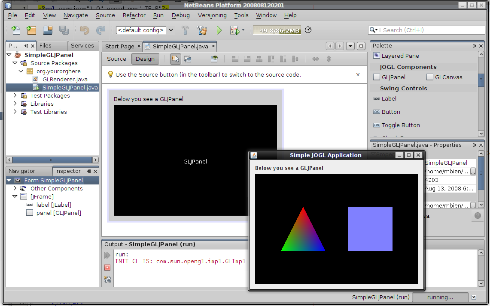
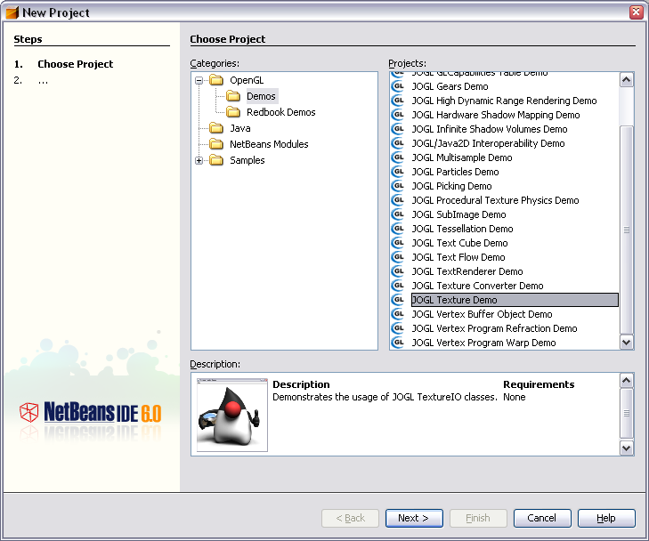
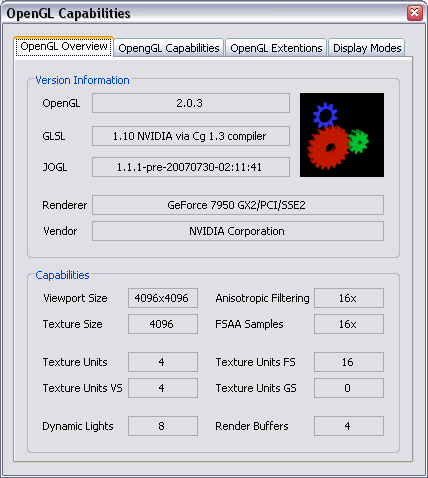
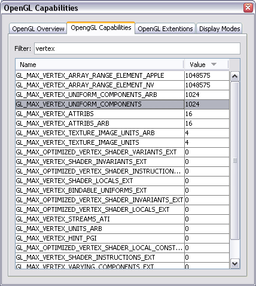
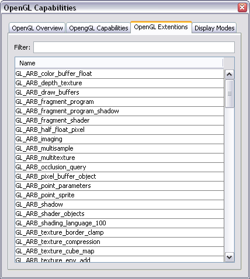
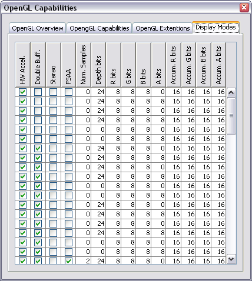
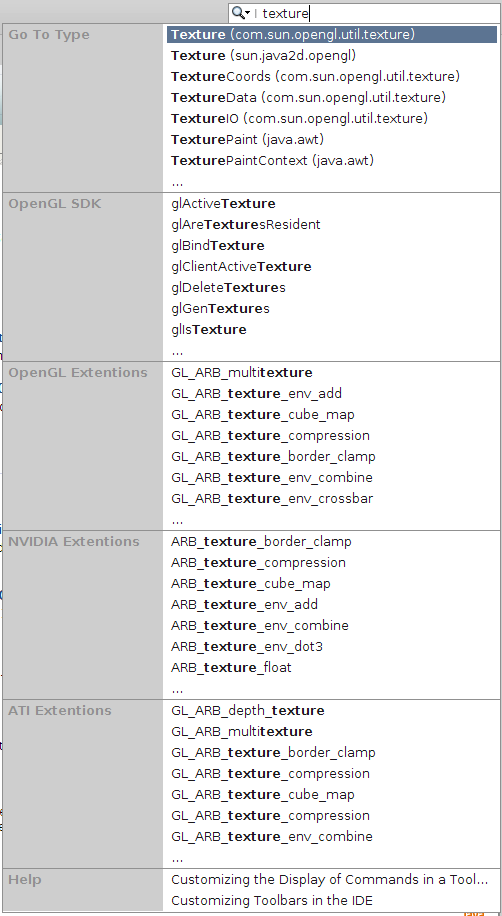

full featured editor for OpenGL Shading Language files

compile and link shaders

auto completion including documentation for GLSL files

JOGL components now via FormDesigner palette available

ready to run JOGL demo projects and RedBook samples included

OpenGL Capabilities Viewer




OpenGL QuickSearch indexing several online resources
